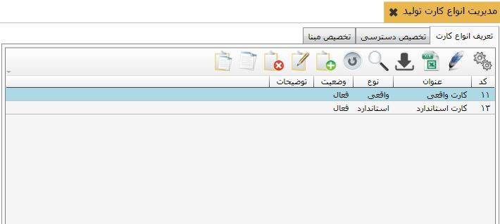

اضافه را انتخاب نمایید تا فرم ایجاد کارت تولید باز شود:
اضافه را انتخاب نمایید تا فرم ایجاد کارت تولید باز شود:
برای صدورکارت تولید استاندار و واقعی، تعریف انواع کارت های تولید الزامی است، در این جا به نحوه تعریف کارت های تولید می پردازیم. برای ایجاد کارت تولید (واقعی یا استاندارد)، روی گزینه « مدیریت انواع کارت های تولید» از منوی « اطلاعات پایه و عملیات» کلیک کنید، پنجره ای باز می شود که شامل سه تب « تعریف انواع کارت تولید» ،« تخصیص دسترسی» و « تخصیص مبنا» می باشد.
در شکل زیر این منو را مشاهده میکنید.
با استفاده از این سه تب به ترتیب شما می توانید کارت های تولید را ایجاد کنید و در تب بعد مشخص کنید که هر کاربر به کدام عملیات دسترسی داشته باشد و در تب سوم می توانید عملیات های سایر سیستم ها را به کارت تولید تعریف شده تخصیص دهید.
در این تب می توانید کارت های مورد نیاز برای تولید را تعریف کنید. برای تعریف کارت تولید از جدول موجود گزینه
اضافه را انتخاب نمایید تا فرم ایجاد کارت تولید باز شود:

کد کارت به صورت اتوماتیک توسط سیستم تعیین می شود، البته قابلیت ویرایش شدن دارد. در فیلد عنوان، عنوان کارت تولید جدید را تایپ کنید.
 درلیست باز شده بسته به نیاز کارت تولید استاندارد و یا واقعی را انتخاب کنید.
درلیست باز شده بسته به نیاز کارت تولید استاندارد و یا واقعی را انتخاب کنید.
در ادامه، فیلد وضعیت به صورت پیش فرض روی گزینه فعال می باشد، چنانچه در هر زمان آن را به حالت غیر فعال تغییر دهید دیگر نمی توانید از این کارت هنگام تولید محصول استفاده کنید.
و در نهایت اگر توضیحی لازم بود در فیلد توضیحات تایپ کنید و بر روی دکمه تایید کلیک کنید. بدین ترتیب کارت تولیدجدید ایجاد می شود و می توانید آن را در لیست عملیات مشاهده کنید.